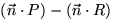

Una recta divideix el pla en dues meitats, o semiplans. En certs casos ens interessarà saber a quina de les dues meitats pertany un punt donat. Aquest problema és especialment senzill quan la recta està donada per la seva representació implícita. Aleshores disposem d'un vector normal a la recta, i podem parlar del semiplà cap a on apunta el vector normal, i l'oposat al vector normal (observeu que en aquest sentit hi ha una diferència entre les rectes ax+by+c=0 i -ax-by-c=0, ja que malgrat consistir dels mateixos punts tenen l'orientació canviada: els vectors normals apunten en direccions contràries).
Donat un punt R, calculem . Si el resultat és negatiu, R és al semiplà apuntat per la normal, i si és positiu R és al semiplà oposat a la normal.
Quan la recta està representada en alguna de les altres formes que
hem mencionat més amunt, la identitat dels dos semiplans no queda
determinada sinó implícitament: les altres formes de representació de
la recta ens donen un sentit de recorregut de la recta (valors
creixents del paràmetre, valors creixents de x). Podem doncs
imaginar que caminem sobre la recta i parlar així del semiplà que
queda a la nostra esquerra i el semiplà que queda a la nostra
dreta. Les fórmules de conversió de representacions de la taula
anterior fan correspondre sempre el semiplà de la nostra esquerra amb
el semiplà apuntat per la normal, pel que hi ha prou amb usar la
conversió corresponent de la taula i aplicar la regla donada al
punt anterior per a rectes en forma implícita.